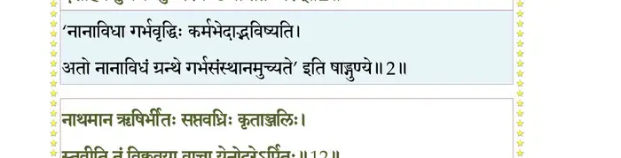
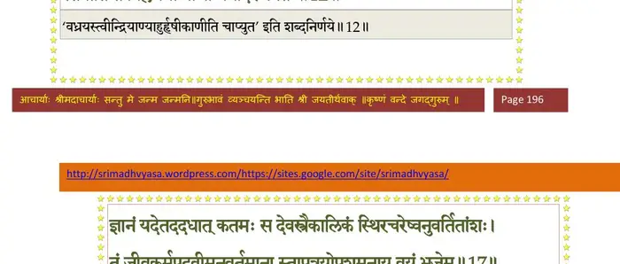
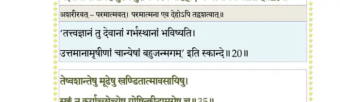
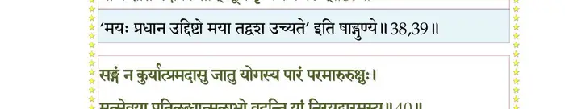
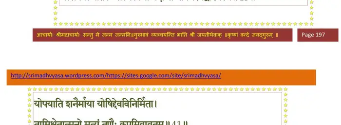
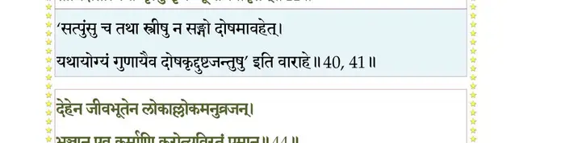
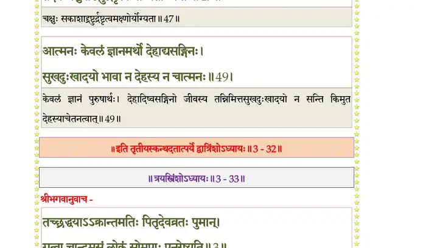

स्कन्ध 3 · अध्याय 32
श्लोक १
भगवानुवाच–
कर्मणा दैवतन्त्रैण जन्तुर्देहोपपत्तये ।
स्त्रियाः प्राविष्ट उदरं पुंसो रेतःकणाश्रयः।। १ ।।
कर्मणा दैवतन्त्रैण जन्तुर्देहोपपत्तये ।
स्त्रियाः प्राविष्ट उदरं पुंसो रेतःकणाश्रयः।। १ ।।
श्लोक २
कलिलं त्वेकरात्रैण पञ्चरत्रेण बुद्बुदम् ।
दशाहेन तु कर्कन्धुः पेश्यण्डं वा ततः परम्।। २ ।।
दशाहेन तु कर्कन्धुः पेश्यण्डं वा ततः परम्।। २ ।।
भागवततात्पर्यनिर्णय

श्लोक ३
मासेन तु शिरो द्वाभ्यां बाह्वङ्घ्र्याद्यङ्गविग्रहः ।
नखरोमास्थिचर्माणि लिङ्गच्छिद्रोद्भवस्त्रिभिः।। ३ ।।
नखरोमास्थिचर्माणि लिङ्गच्छिद्रोद्भवस्त्रिभिः।। ३ ।।
श्लोक ४
चतुर्भिर्धातवः सप्त पञ्चभिः क्षुत्तृडुद्भवः ।
षड्भिर्जरायुणा वीतः कुक्षौ भ्रमति दक्षिणे।। ४ ।।
षड्भिर्जरायुणा वीतः कुक्षौ भ्रमति दक्षिणे।। ४ ।।
श्लोक ५
सप्तमे जन्मकर्माणि गतानि स्मरते ऋषिः ।
जगत्यां यानि देवस्य मायया बन्धमात्मनः।। ५ ।।
जगत्यां यानि देवस्य मायया बन्धमात्मनः।। ५ ।।
श्लोक ६
मातुर्जग्धान्नपानाद्यैरेधत्यातुरसम्मतः ।
आस्ते विण्मूत्रयोर्गर्ते सजन्तुर्जन्तुसम्भवे।। ६ ।।
आस्ते विण्मूत्रयोर्गर्ते सजन्तुर्जन्तुसम्भवे।। ६ ।।
श्लोक ७
कृमिमिः क्षतकण्ड्वङ्गः सौकुमार्यात् प्रातिक्षणम् ।
मूर्च्छामाप्नोत्युरुक्लेशस्तत्रत्यैः क्षुधितैर्मुहुः।। ७ ।।
मूर्च्छामाप्नोत्युरुक्लेशस्तत्रत्यैः क्षुधितैर्मुहुः।। ७ ।।
श्लोक ८
कटुतीक्ष्णोष्णलवणक्षाराम्लादिभिरुल्बणैः ।
मातृभुक्तैरुपस्पृष्टः सर्वाङ्गोत्थितवेदनः।। ८ ।।
मातृभुक्तैरुपस्पृष्टः सर्वाङ्गोत्थितवेदनः।। ८ ।।
श्लोक ९
उल्बेन संवृतस्तस्मिन्नान्त्रैश्र बहिरावृतः ।
आस्ते कृत्वा शिरः कुक्षौ भुग्नपृष्ठशिरोधरः।। ९ ।।
आस्ते कृत्वा शिरः कुक्षौ भुग्नपृष्ठशिरोधरः।। ९ ।।
श्लोक १०
अकल्पः स्वाङ्गचेष्टायां शकुन्त इव पञ्जरे ।
तत्र लब्धस्मृतिर्दैवात् कर्म जन्मशतोद्भवम् ।
स्मरन् दीर्घमनुष्वासं गर्भे किं नाम विन्दते।। १० ।।
तत्र लब्धस्मृतिर्दैवात् कर्म जन्मशतोद्भवम् ।
स्मरन् दीर्घमनुष्वासं गर्भे किं नाम विन्दते।। १० ।।
श्लोक ११
आरभ्य सप्तमान्मासाल्लब्धबोधोऽपि वेपितः ।
नैकत्रास्ते सूतिवातैर्विष्ठाभूरिव सोदरः।। ११ ।।
नैकत्रास्ते सूतिवातैर्विष्ठाभूरिव सोदरः।। ११ ।।
श्लोक १२
नाथमानो ऋषिर्भीतः सप्तवध्रिः कृताञ्जलिः ।
स्तुवीत तं विक्लवया वाचा येनोदरेऽर्पितः।। १२ ।।
स्तुवीत तं विक्लवया वाचा येनोदरेऽर्पितः।। १२ ।।
भागवततात्पर्यनिर्णय

श्लोक १३
जीव उवाच–
तस्योपसन्नमवितुर्जगदिच्छयाऽऽत्त-
लीलातनोर्भुवि लसच्चरणारविन्दम् ।
सोऽहं व्रजामि शरणं नकुतोभयं मे
येनेदृशी गतिरदर्श्यसतोऽनुरूपा।। १३ ।।
तस्योपसन्नमवितुर्जगदिच्छयाऽऽत्त-
लीलातनोर्भुवि लसच्चरणारविन्दम् ।
सोऽहं व्रजामि शरणं नकुतोभयं मे
येनेदृशी गतिरदर्श्यसतोऽनुरूपा।। १३ ।।
श्लोक १४
यस्त्वत्र बद्ध इव कर्मभिरावृतात्मा
भूतेन्द्रियाशयमयीमवलम्ब्य मायाम् ।
आस्ते विशुद्धमविकारमखण्डबोध-
मातप्यमानहृदयेऽवसितं तमेमि।। १४ ।।
भूतेन्द्रियाशयमयीमवलम्ब्य मायाम् ।
आस्ते विशुद्धमविकारमखण्डबोध-
मातप्यमानहृदयेऽवसितं तमेमि।। १४ ।।
श्लोक १५
यः पञ्चभूतरचिते रहितः शरीरे
छन्नो यथेन्द्रियगुणार्थविदात्मकोऽहम् ।
तेनाविकुण्ठमहिमानमृषिं तमेनं
वन्दे परं प्राकृतिपूरुषयोः पुमांसम्।। १५ ।।
छन्नो यथेन्द्रियगुणार्थविदात्मकोऽहम् ।
तेनाविकुण्ठमहिमानमृषिं तमेनं
वन्दे परं प्राकृतिपूरुषयोः पुमांसम्।। १५ ।।
श्लोक १६
यन्माययोरुगुणकर्मनिबन्धनेऽस्मिन्
सांसारिके पथि चरंस्तदतिश्रमेण ।
नष्टस्मृतिः पुनरयं प्रावृणीत लोको
युक्त्या कया महदनुग्रहमन्तरेण।। १६ ।।
सांसारिके पथि चरंस्तदतिश्रमेण ।
नष्टस्मृतिः पुनरयं प्रावृणीत लोको
युक्त्या कया महदनुग्रहमन्तरेण।। १६ ।।
श्लोक १७
ज्ञानं यदेतददधात् कतमः स देव-
स्त्रैकालिकं स्थिरचरेष्वनुवर्तितांशः ।
तं जीवकर्मपदवीमनुवर्तमाना-
स्तापत्रयोपशमनाय वयं भजेम।। १७ ।।
स्त्रैकालिकं स्थिरचरेष्वनुवर्तितांशः ।
तं जीवकर्मपदवीमनुवर्तमाना-
स्तापत्रयोपशमनाय वयं भजेम।। १७ ।।
भागवततात्पर्यनिर्णय
श्लोक १८
देह्यन्यदेहविवरे जठराग्निनाऽसृग्-
विण्मूत्रकूपपतितो भृशतप्तदेहः ।
इच्छन्नितो विवसितुं गणयन् स्वमासान्
निर्वास्यते कृपणधीर्भगवन् कदा नु।। १८ ।।
विण्मूत्रकूपपतितो भृशतप्तदेहः ।
इच्छन्नितो विवसितुं गणयन् स्वमासान्
निर्वास्यते कृपणधीर्भगवन् कदा नु।। १८ ।।
श्लोक १९
येनेदृशीं मतिमसौ दशमास्य ईश
सङ्ग्राहितः पुरुदयेन भवादृशेन ।
स्वेनैव तुष्यतु कृतेन स दीननाथः
को नाम तत्प्राति विनाऽञ्जलिमस्य कुर्यात्।। १९ ।।
सङ्ग्राहितः पुरुदयेन भवादृशेन ।
स्वेनैव तुष्यतु कृतेन स दीननाथः
को नाम तत्प्राति विनाऽञ्जलिमस्य कुर्यात्।। १९ ।।
श्लोक २०
पश्यत्ययं धिषणया ननु सप्तवघ्रिः
शारीरभेदमशरीरवदस्य देहे ।
यद्दत्तया स तमहं पुरुषं पुराणं
पश्ये बहिर्हृदि च चैत्त्यमिव प्रातीतम्।। २० ।।
शारीरभेदमशरीरवदस्य देहे ।
यद्दत्तया स तमहं पुरुषं पुराणं
पश्ये बहिर्हृदि च चैत्त्यमिव प्रातीतम्।। २० ।।
भागवततात्पर्यनिर्णय

श्लोक २१
सोऽहं वसन्नपि विभो बहुदुःखवासं
गर्भान्न निर्जिगमिषे बहिरन्धकूपे ।
यत्रोपयातमुपसर्पति देवमाया
मिथ्यामतिर्यदनु संसृतिचक्रमेतत्।। २१ ।।
गर्भान्न निर्जिगमिषे बहिरन्धकूपे ।
यत्रोपयातमुपसर्पति देवमाया
मिथ्यामतिर्यदनु संसृतिचक्रमेतत्।। २१ ।।
श्लोक २२
तस्मादहं विगतविक्लव उद्धरिष्य
आत्मानमाशु तमसः सुहृदात्मनैव ।
भूयो यथा व्यसनमेदतनेकरन्ध्रं
मा मे भविष्यदुपसादितविष्णुपादः।। २२ ।।
आत्मानमाशु तमसः सुहृदात्मनैव ।
भूयो यथा व्यसनमेदतनेकरन्ध्रं
मा मे भविष्यदुपसादितविष्णुपादः।। २२ ।।
श्लोक २३
भगवानुवाच–
एवं कृतमतिं गर्भे दशमास्यं सपद्यृषिम् ।
सद्यः क्षिपत्यवाचीनं प्रासूत्यै सूतिमारुतः।। २३ ।।
एवं कृतमतिं गर्भे दशमास्यं सपद्यृषिम् ।
सद्यः क्षिपत्यवाचीनं प्रासूत्यै सूतिमारुतः।। २३ ।।
श्लोक २४
तेनोपसृष्टः सहसा कृत्वाऽवाक् शिर आतुरः ।
विनिष्क्रामति कृच्छ्रेण निरुच्छवासो गतस्मृतिः।। २४ ।।
विनिष्क्रामति कृच्छ्रेण निरुच्छवासो गतस्मृतिः।। २४ ।।
श्लोक २५
पतितो भुव्यसृङ्मूत्रे विष्ठाभूरिव चेष्टते ।
रोरूयति गतज्ञानो विपरीतां गतिं गतः।। २५ ।।
रोरूयति गतज्ञानो विपरीतां गतिं गतः।। २५ ।।
श्लोक २६
परच्छन्दं नविदुषा पुष्यमाणो जनेन सः ।
अनभिप्रोतमापन्नः प्रात्याख्यातुमनीश्वरः।। २६ ।।
अनभिप्रोतमापन्नः प्रात्याख्यातुमनीश्वरः।। २६ ।।
श्लोक २७
शायितोऽशुचिपर्यङ्के जन्तुः स्वेदजदूषिते ।
नेशः कण्डूयनेऽङ्गानामासनोत्थानचेष्टने।। २७ ।।
नेशः कण्डूयनेऽङ्गानामासनोत्थानचेष्टने।। २७ ।।
श्लोक २८
तदुन्त्यामत्वचं दंशा मशका मत्कुणादयः ।
रुदन्तं विगतज्ञानं कृमयः कृमिकं यथा।। २८ ।।
रुदन्तं विगतज्ञानं कृमयः कृमिकं यथा।। २८ ।।
श्लोक २९
स त्वेवं शैशवं भुक्त्वा दुःखं पौगण्डमेव च ।
अलब्धाभीप्सितोऽज्ञानादिद्धमन्युः शुचाऽर्पितः।। २९ ।।
अलब्धाभीप्सितोऽज्ञानादिद्धमन्युः शुचाऽर्पितः।। २९ ।।
श्लोक ३०
सह देहेन मानेन वर्धमानेन मन्युना ।
करोति विग्रहं कामी कामिष्वन्ताय चात्मनः।। ३० ।।
करोति विग्रहं कामी कामिष्वन्ताय चात्मनः।। ३० ।।
श्लोक ३१
भूतैः पञ्चभिरारब्धे देहे देह्यबुधोऽसकृत् ।
अहंममेत्यसद्ग्राहां करोति कुमतिर्मतिम्।। ३१ ।।
अहंममेत्यसद्ग्राहां करोति कुमतिर्मतिम्।। ३१ ।।
श्लोक ३२
तदर्थं कुरुते कर्म यद्बद्धो याति संसृतिम् ।
तमो विशति यद्बद्धो येनासौ मर्त्यजन्मनि।। ३२ ।।
तमो विशति यद्बद्धो येनासौ मर्त्यजन्मनि।। ३२ ।।
श्लोक ३३
येन यातीदृशं क्लेशमविद्याकर्मबन्धनम्।। ३३ ।।
श्लोक ३४
यद्यसद्भिः पथि पुनः शिश्नोदरकृतोद्यमैः ।
आस्थितो रमते जन्तुस्तमो विशति पूर्ववत्।। ३४ ।।
आस्थितो रमते जन्तुस्तमो विशति पूर्ववत्।। ३४ ।।
श्लोक ३५
सत्यं शौचं दया मौनं बुद्धिः श्रीर्ह्रीर्यशः क्षमा ।
शमो दमो भगश्चेति यत्सङ्गाद् याति संक्षयम्।। ३५ ।।
शमो दमो भगश्चेति यत्सङ्गाद् याति संक्षयम्।। ३५ ।।
श्लोक ३६
तेष्वशान्तेषु मूढेषु खण्डितात्मावसायिषु ।
सङ्गं न कुर्याच्छोच्येषु योषित्क्रीडामृगेषु च।। ३६ ।।
सङ्गं न कुर्याच्छोच्येषु योषित्क्रीडामृगेषु च।। ३६ ।।
भागवततात्पर्यनिर्णय
श्लोक ३७
न तथाऽस्य भवेन्मोहो बन्धश्चान्यप्रासङ्गतः ।
योषित्सङ्गाद् यथा पुंसां यथा तत्सङ्गिसङ्गतः।। ३७ ।।
योषित्सङ्गाद् यथा पुंसां यथा तत्सङ्गिसङ्गतः।। ३७ ।।
श्लोक ३८
प्राजापतिर्दुहितरं दृष्ट्वा तद्रूपधर्षितः ।
रोहिद्भूतां सोऽन्वधावद् ऋष्यरूपी गतत्रपः।। ३८ ।।
रोहिद्भूतां सोऽन्वधावद् ऋष्यरूपी गतत्रपः।। ३८ ।।
श्लोक ३९
तत्सृष्टिसृष्टसृष्टेषु कोन्वखण्डितधीः पुमान् ।
ऋषिं नारायणमृते योषिन्मय्येह मायया।। ३९ ।।
ऋषिं नारायणमृते योषिन्मय्येह मायया।। ३९ ।।
भागवततात्पर्यनिर्णय
श्लोक ४०
बलं मे पश्य मायायाः स्त्रीमय्या जयिनो दिशाम् ।
या करोति निजायत्तान् भ्रूविजृम्भेण केवलम्।। ४० ।।
या करोति निजायत्तान् भ्रूविजृम्भेण केवलम्।। ४० ।।
भागवततात्पर्यनिर्णय

श्लोक ४१
सङ्गं न कुर्यात् प्रामदासु जातु योगस्य पारं परमारुरुक्षुः ।
मत्सेवया प्रातिलब्धात्मलाभो वदन्ति यां निरयद्वारमस्य।। ४१ ।।
मत्सेवया प्रातिलब्धात्मलाभो वदन्ति यां निरयद्वारमस्य।। ४१ ।।
भागवततात्पर्यनिर्णय

श्लोक ४२
योपयाति शनैर्माया योषिद् देवविनिर्भिता ।
तामीक्षेतात्मनो मृत्युं तृणैः कूपमिवावृतम्।। ४२ ।।
तामीक्षेतात्मनो मृत्युं तृणैः कूपमिवावृतम्।। ४२ ।।
भागवततात्पर्यनिर्णय

श्लोक ४३
यां मन्यते पतिर्मोहान्मन्मायामृषभायतीम् ।
स्त्रीत्वं स्त्रीसङ्गतः प्र•प्तां वित्तापत्यगृहप्रादाम्।। ४३ ।।
स्त्रीत्वं स्त्रीसङ्गतः प्र•प्तां वित्तापत्यगृहप्रादाम्।। ४३ ।।
श्लोक ४४
तमात्मनो विजानीयाद् भृत्यापत्यगृहात्मकम् ।
दैवोपसादितं मृत्युं मृगयोर्गायनं यथा।। ४४ ।।
दैवोपसादितं मृत्युं मृगयोर्गायनं यथा।। ४४ ।।
श्लोक ४५
देहेन जीवभूतेन लोकाल्लोकमनुव्रजन् ।
भुञ्जान एव कर्माणि करोत्यविरतं पुमान्।। ४५ ।।
भुञ्जान एव कर्माणि करोत्यविरतं पुमान्।। ४५ ।।
भागवततात्पर्यनिर्णय
श्लोक ४६
जीवो यस्यानुगो देहो भूतेन्द्रियमनोमयः ।
तन्निरोधोऽस्य मरणमाविर्भावस्तु सम्भवः।। ४६ ।।
तन्निरोधोऽस्य मरणमाविर्भावस्तु सम्भवः।। ४६ ।।
श्लोक ४७
द्रव्योपलब्धिस्थानस्य द्रव्येक्षाऽयोग्यता यदा ।
तत् पञ्चत्वमहंमानादुत्पत्तिर्द्रव्यदर्शनम्।। ४७ ।।
तत् पञ्चत्वमहंमानादुत्पत्तिर्द्रव्यदर्शनम्।। ४७ ।।
श्लोक ४८
यथाऽक्ष्णोर्द्रव्यावयवदर्शनायोग्यता यदा ।
तदैव चक्षुषो द्रष्टुर्द्रष्टृत्वं योग्यताऽनयोः।। ४८ ।।
तदैव चक्षुषो द्रष्टुर्द्रष्टृत्वं योग्यताऽनयोः।। ४८ ।।
भागवततात्पर्यनिर्णय

श्लोक ४९
पुंसो यथैवेन्द्रियाणि विन्दन्ति स्वगतं परम् ।
सुखं दुःखं नान्यगतं तथेशांशाः पृथक्कलाः।। ४९ ।।
सुखं दुःखं नान्यगतं तथेशांशाः पृथक्कलाः।। ४९ ।।
श्लोक ५०
आत्मनः केवलं ज्ञानमर्थो देहाद्यसङ्गिनः ।
सुखदुःखादयो भावा न देहस्य न चात्मनः।। ५० ।।
सुखदुःखादयो भावा न देहस्य न चात्मनः।। ५० ।।
श्लोक ५१
तस्मान्न कार्यः सन्त्रासो न कार्पण्यं न सम्भ्रमः ।
बुद्ध्वा जीवगतिं धीरो मुक्तसङ्गश्चरेदिह।। ५१ ।।
बुद्ध्वा जीवगतिं धीरो मुक्तसङ्गश्चरेदिह।। ५१ ।।
श्लोक ५२
सम्यग्दर्शनया बुद्ध्या योगवैराग्ययुक्तया ।
मायाविरचिते लोके चरेद् यस्य कलेवरम्।। ५२ ।।
मायाविरचिते लोके चरेद् यस्य कलेवरम्।। ५२ ।।
।। इति श्रीमद्भागवते तृतीयस्कन्धे द्वात्रिंशोऽध्यायः ।।